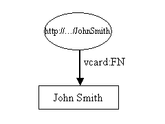
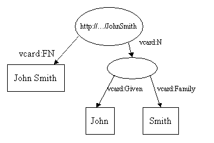
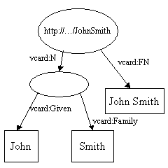
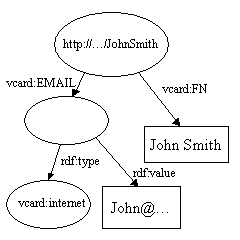
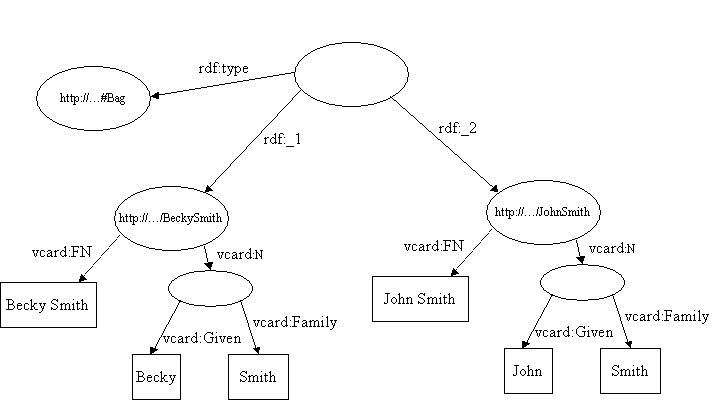

Implementing too quickly, without first understanding the RDF data model, leads to frustration and disappointment. Yet studying the data model alone is dry stuff and often leads to tortuous metaphysical conundrums. It is better to approach understanding both the data model and how to use it in parallel. Learn a bit of the data model and try it out. Then learn a bit more and try that out. Then the theory informs the practice and the practice the theory. The data model is quite simple, so this approach does not take long.
RDF has an XML syntax and many who are familiar with XML will think of RDF in terms of that syntax. This is mistake. RDF should be understood in terms of its data model. RDF data can be represented in XML, but understanding the syntax is secondary to understanding the data model.
An implementation of the Jena API, including the working source code for all the examples used in this tutorial can be downloaded from http://www.hpl.hp.com/semweb/.
The Resource Description Framework (RDF) is a standard (technically a W3C Recommendation) for describing resources. What is a resource? That is rather a deep question and the precise definition is still the subject of debate. For our purposes we can think of it as anything we can identify. You are a resource, as is your home page, this tutorial, the number one and the great white whale in Moby Dick.
Our examples in this tutorial will be about people. They use an RDF representation of VCARDS. RDF is best thought of in the form of node and arc diagrams. A simple vcard might look like this in RDF:

The resource, John Smith, is shown as an elipse and is identified by a Uniform Resource Identifier (URI)1, in this case "http://.../JohnSmith". If you try to access that resource using your browser, you are unlikely to be successful; April the first jokes not withstanding, you would be rather surprised if your browser were able to deliver John Smith to your desk top. If you are unfamiliar with URI's, think of them simply as rather strange looking names.
Resources have properties. In these examples we are interested in the sort of properties that would appear on John Smith's business card. Figure 1 shows only one property, John Smith's full name. A property is represented by an arc, labeled with the name of a property. The name of a property is also a URI, but as URI's are rather long and cumbersome, the diagram shows it in XML qname form. The part before the ':' is called a namespace prefix and represents a namespace. The part after the ':' is called a local name and represents a name in that namespace. Properties are usually represented in this qname form when written as RDF XML and it is a convenient shorthand for representing them in diagrams and in text. Strictly, however, properties are identified by a URI. The nsprefix:localname form is a shorthand for the URI of the namespace concatenated with the localname. There is no requirement that the URI of a property resolve to anything when accessed by a browser.
Each property has a value. In this case the value is a literal, which for now we can think of as a strings of characters2. Literals are shown in rectangles.
Jena is a Java API which can be used to create and manipulate RDF graphs like this one. Jena has object classes to represent graphs, resources, properties and literals. The interfaces representing resources, properties and literals are called Resource, Property and Literal respectively. In Jena, a graph is called a model and is represented by the Model interface.
The code to create this graph, or model, is simple:
// some definitions static String personURI = "http://somewhere/JohnSmith"; static String fullName = "John Smith"; // create an empty Model Model model = ModelFactory.createDefaultModel(); // create the resource Resource johnSmith = model.createResource(personURI); // add the property johnSmith.addProperty(VCARD.FN, fullName);
It begins with some constant definitions and then creates an empty Model
or model, using the ModelFactory method createDefaultModel()
to create a memory-based model. Jena contains other implementations
of the Model interface, e.g one which uses a relational database: these
types of Model are also available from ModelFactory.
The John Smith resource is then created and a property added to it. The property is provided by a "constant" class VCARD which holds objects representing all the definitions in the VCARD schema. Jena provides constant classes for other well known schemas, such as RDF and RDF schema themselves, Dublin Core and DAML.
The code to create the resource and add the property, can be more compactly written in a cascading style:
Resource johnSmith = model.createResource(personURI) .addProperty(VCARD.FN, fullName);
The working code for this example can be found in the tutorial package of the Jena distribution as tutorial 1. As an exercise, take this code and modify it to create a simple VCARD for yourself.
Now let's add some more detail to the vcard, exploring some more features of RDF and Jena.
In the first example, the property value was a literal. RDF properties can also take other resources as their value. Using a common RDF technique, this example shows how to represent the different parts of John Smith's name:

Here we have added a new property, vcard:N, to represent the structure of John Smith's name. There are several things of interest about this Model. Note that the vcard:N property takes a resource as its value. Note also that the ellipse representing the compound name has no URI. It is known as an blank Node.
The Jena code to construct this example, is again very simple. First some declarations and the creation of the empty model.
// some definitions String personURI = "http://somewhere/JohnSmith"; String givenName = "John"; String familyName = "Smith"; String fullName = givenName + " " + familyName; // create an empty Model Model model = ModelFactory.createDefaultModel(); // create the resource // and add the properties cascading style Resource johnSmith = model.createResource(personURI) .addProperty(VCARD.FN, fullName) .addProperty(VCARD.N, model.createResource() .addProperty(VCARD.Given, givenName) .addProperty(VCARD.Family, familyName));
The working code for this example can be found as tutorial 2 in the tutorial package of the Jena distribution.
Each arc in an RDF Model is called a statement. Each statement asserts a fact about a resource. A statement has three parts:
A statement is sometimes called a triple, because of its three parts.
An RDF Model is represented as a set of statements. Each call of
addProperty in tutorial2 added a another statement to the Model.
(Because a Model is set of statements, adding a duplicate of a statement has no
effect.) The Jena model interface defines a listStatements()
method which returns an StmtIterator, a subtype of Java's
Iterator over all all the statements in a Model.
StmtIterator has a method nextStatement()
which returns the next statement from the iterator (the same one that
next() would deliver, already cast to Statement).
The Statement interface provides accessor
methods to the subject, predicate and object of a statement.
Now we will use that interface to extend tutorial2 to list all the statements created and print them out. The complete code for this can be found in tutorial 3.
// list the statements in the Model StmtIterator iter = model.listStatements(); // print out the predicate, subject and object of each statement while (iter.hasNext()) { Statement stmt = iter.nextStatement(); // get next statement Resource subject = stmt.getSubject(); // get the subject Property predicate = stmt.getPredicate(); // get the predicate RDFNode object = stmt.getObject(); // get the object System.out.print(subject.toString()); System.out.print(" " + predicate.toString() + " "); if (object instanceof Resource) { System.out.print(object.toString()); } else { // object is a literal System.out.print(" \"" + object.toString() + "\""); } System.out.println(" ."); }
Since the object of a statement can be either a resource or a literal, the
getObject() method returns an
object typed as RDFNode, which is a
common superclass of both Resource
and Literal. The underlying object
is of the appropriate type, so the code uses instanceof to
determine which and
processes it accordingly.
When run, this program should produce output resembling:
http://somewhere/JohnSmith http://www.w3.org/2001/vcard-rdf/3.0#N anon:14df86:ecc3dee17b:-7fff .
anon:14df86:ecc3dee17b:-7fff http://www.w3.org/2001/vcard-rdf/3.0#Family "Smith" .
anon:14df86:ecc3dee17b:-7fff http://www.w3.org/2001/vcard-rdf/3.0#Given "John" .
http://somewhere/JohnSmith http://www.w3.org/2001/vcard-rdf/3.0#FN "John Smith" .Now you know why it is clearer to draw Models. If you look carefully, you will see that each line consists of three fields representing the subject, predicate and object of each statement. There are four arcs in the Model, so there are four statements. The "anon:14df86:ecc3dee17b:-7fff" is an internal identifier generated by Jena. It is not a URI and should not be confused with one. It is simply an internal label used by the Jena implementation.
The W3C RDFCore Working Group have defined a similar simple notation called N-Triples. The name means "triple notation". We will see in the next section that Jena has an N-Triples writer built in.
Jena has methods for reading and writing RDF as XML. These can be used to save an RDF model to a file and later read it back in again.
Tutorial 3 created a model and wrote it out in triple form. Tutorial 4 modifies tutorial 3 to write the
model in RDF XML form to the standard output stream. The code again, is
very simple: model.write can take an OutputStream
argument.
// now write the model in XML form to a file model.write(System.out);
The output should look something like this:
<rdf:RDF xmlns:rdf='http://www.w3.org/1999/02/22-rdf-syntax-ns#' xmlns:vcard='http://www.w3.org/2001/vcard-rdf/3.0#' > <rdf:Description rdf:about='http://somewhere/JohnSmith'> <vcard:FN>John Smith</vcard:FN> <vcard:N rdf:resource='#A0'/> </rdf:Description> <rdf:Description rdf:about='#A0'> <vcard:Given>John</vcard:Given> <vcard:Family>Smith</vcard:Family> </rdf:Description> </rdf:RDF>
The RDF specifications specify how to represent RDF as XML. The RDF XML syntax is quite complex. The reader is referred to the primer being developed by the RDFCore WG for a more detailed introduction. However, let's take a quick look at how to interpret the above.
RDF is usually embedded in an <rdf:RDF> element. The element is optional if there are other ways of know that some XML is RDF, but it is usually present. The RDF element defines the two namespaces used in the document. There is then an <rdf:Description> element which describes the resource whose URI is "http://somewhere/JohnSmith". If the rdf:about attribute was missing, this element would represent a blank node.
The <vcard:FN> element describes a property of the resource. The property name is the "FN" in the vcard namespace. RDF converts this to a URI reference by concatenating the URI reference for the namespace prefix and "FN", the local name part of the name. This gives a URI reference of "http://www.w3.org/2001/vcard-rdf/3.0#FN". The value of the property is the literal "John Smith".
The <vcard:N> element is a resource. In this case the resource is represented by a relative URI reference. RDF converts this to an absolute URI reference by concatenating it with the base URI of the current document.
There is an error in this RDF XML; it does not exactly represent the Model we created. The blank node in the Model has been given a URI reference. It is no longer blank. The RDF/XML syntax is not capable of representing all RDF Models; for example it cannot represent a blank node which is the object of two statements. The 'dumb' writer we used to write this RDF/XML makes no attempt to write correctly the subset of Models which can be written correctly. It gives a URI to each blank node, making it no longer blank.
Jena has an extensible interface which allows new writers for different
serialization languages for RDF to be easily plugged in. The above call
invoked the standard 'dumb' writer. Jena also includes a more sophisticated
RDF/XML writer which can be invoked by specifying another argument to the
write() method call:
// now write the model in XML form to a file model.write(system.out, "RDF/XML-ABBREV");
This writer, the so called PrettyWriter, takes advantage of features of the RDF/XML abbreviated syntax to write a Model more compactly. It is also able to preserve blank nodes where that is possible. It is however, not suitable for writing very large Models, as its performance is unlikely to be acceptable. To write large files and preserve blank nodes, write in N-Triples format:
// now write the model in XML form to a file model.write(system.out, "N-TRIPLE");
This will produce output similar to that of tutorial 3 which conforms to the N-Triples specification.
Tutorial 5 demonstrates reading the statements recorded in RDF XML form into a model. With this tutorial, we have provided a small database of vcards in RDF/XML form. The following code will read it in and write it out. Note that for this application to run, the input file must be in a directory or jar on your classpath.
// create an empty model Model model = ModelFactory.createDefaultModel(); // use the class loader to find the input file InputStream in = Tutorial05.class .getClassLoader() .getResourceAsStream(inputFileName); if (in == null) { throw new IllegalArgumentException( "File: " + inputFileName + " not found"); } // read the RDF/XML file model.read(new InputStreamReader(in), ""); // write it to standard out model.write(system.out);
The second argument to the read() method call is the URI which will
be used for resolving relative URI's. As there are no relative URI
references in the test file, it is allowed to be empty. When run, tutorial 5 will produce XML output which
looks like:
<rdf:RDF xmlns:rdf='http://www.w3.org/1999/02/22-rdf-syntax-ns#' xmlns:vcard='http://www.w3.org/2001/vcard-rdf/3.0#' > <rdf:Description rdf:about='#A0'> <vcard:Family>Smith</vcard:Family> <vcard:Given>John</vcard:Given> </rdf:Description> <rdf:Description rdf:about='http://somewhere/JohnSmith/'> <vcard:FN>John Smith</vcard:FN> <vcard:N rdf:resource='#A0'/> </rdf:Description> <rdf:Description rdf:about='http://somewhere/SarahJones/'> <vcard:FN>Sarah Jones</vcard:FN> <vcard:N rdf:resource='#A1'/> </rdf:Description> <rdf:Description rdf:about='http://somewhere/MattJones/'> <vcard:FN>Matt Jones</vcard:FN> <vcard:N rdf:resource='#A2'/> </rdf:Description> <rdf:Description rdf:about='#A3'> <vcard:Family>Smith</vcard:Family> <vcard:Given>Rebecca</vcard:Given> </rdf:Description> <rdf:Description rdf:about='#A1'> <vcard:Family>Jones</vcard:Family> <vcard:Given>Sarah</vcard:Given> </rdf:Description> <rdf:Description rdf:about='#A2'> <vcard:Family>Jones</vcard:Family> <vcard:Given>Matthew</vcard:Given> </rdf:Description> <rdf:Description rdf:about='http://somewhere/RebeccaSmith/'> <vcard:FN>Becky Smith</vcard:FN> <vcard:N rdf:resource='#A3'/> </rdf:Description> </rdf:RDF>
Jena is a Java API for semantic web applications. The key RDF package for
the application developer is
com.hp.hpl.jena.rdf.model. The API has been defined
in terms of interfaces so that application code can work with different
implementations without change. This package contains interfaces for
representing models, resources, properties, literals, statements and all the
other key concepts of RDF, and a ModelFactory for creating models. So that
application code remains independent of
the implementation, it is best if it uses interfaces wherever possible, not
specific class implementations.
The com.hp.hpl.jena.tutorial package contains the
working source code for all the examples used in this tutorial.
The com.hp.hpl.jena...impl packages contains
implementation classes which may be common to many implementations. For
example, they defines classes ResourceImpl,
PropertyImpl, and LiteralImpl which may be
used directly or subclassed by different implementations. Applications
should rarely, if ever, use these classes directly. For example, rather
than creating a new instance of ResourceImpl, it is better to
use the createResource method of whatever model is being
used. That way, if the model implementation has used an optimized
implementation of Resource, then no conversions between the two
types will be necessary.
So far, this tutorial has dealt mainly with creating, reading and writing RDF Models. It is now time to deal with accessing information held in a Model.
Given the URI of a resource, the resource object can be retrieved from a
model using the Model.getResource(String uri) method. This
method is defined to return a Resource object if one exists in the model, or
otherwise to create a new one. For example, to retrieve the Adam Smith
resource from the model read in from the file in tutorial 5:
// retrieve the John Smith vcard resource from the model Resource vcard = model.getResource(johnSmithURI);
The Resource interface defines a number of methods for accessing the
properties of a resource. The Resource.getProperty(Property
p) method accesses a property of the resource. This method does
not follow the usual Java accessor convention in that the type of the object
returned is Statement, not the Property that you
might have expected. Returning the whole statement allows the application to
access the value of the property using one of its accessor methods which
return the object of the statement. For example to retrieve the
resource which is the value of the vcard:N property:
// retrieve the value of the N property Resource name = (Resource) vcard.getProperty(VCARD.N) .getObject();
In general, the object of a statement could be a resource or a literal, so the application code, knowing the value must be a resource, casts the returned object. One of the things that Jena tries to do is to provide type specific methods so the application does not have to cast and type checking can be done at compile time. The code fragment above, can be more conveniently written:
// retrieve the value of the FN property Resource name = vcard.getProperty(VCARD.N) .getResource();
Similarly, the literal value of a property can be retrieved:
// retrieve the given name property String fullName = vcard.getProperty(VCARD.FN) .getString();
In this example, the vcard resource has only one vcard:FN and
one vcard:N property. RDF permits a resource to repeat a
property; for example Adam might have more than one nickname. Let's give him
two:
// add two nickname properties to vcard vcard.addProperty(VCARD.NICKNAME, "Smithy") .addProperty(VCARD.NICKNAME, "Adman");
As noted before, Jena represents an RDF Model as set of
statements, so adding a statement with the subject, predicate and object as
one already in the Model will have no effect. Jena does not define which of
the two nicknames present in the Model will be returned. The result of
calling vcard.getProperty(VCARD.NICKNAME) is indeterminate. Jena
will return one of the values, but there is no guarantee even that two
consecutive calls will return the same value.
If it is possible that a property may occur more than once, then the
Resource.listProperties(Property p) method can be used to return an iterator
which will list them all. This method returns an iterator which returns
objects of type Statement. We can list the nicknames like
this:
// set up the output System.out.println("The nicknames of \"" + fullName + "\" are:"); // list the nicknames StmtIterator iter = vcard.listProperties(VCARD.NICKNAME); while (iter.hasNext()) { System.out.println(" " + iter.nextStatement() .getObject() .toString()); }
This code can be found in tutorial 6, which produces the following output when run:
The nicknames of "John Smith" are: Smithy Adman
All the properties of a resource can be listed by using the
listStatements() method without an argument.
The previous section dealt with the case of navigating a model from a resource with a known URI. This section deals with searching a model. The core Jena API supports only a limited query primitive. The more powerful query facilities of RDQL are described elsewhere.
The Model.listStatements() method, which lists all the
statements in a model, is perhaps the crudest way of querying a model.
Its use is not recommended on very large Models.
Model.listSubjects() is similar, but returns an iterator over
all resources that have properties, ie are the subject of some
statement.
Model.listSubjectsWithProperty(Property p, RDFNode
o) will return an iterator over all the resources which
have property p with value o. We might expect
to be able to use the rdf:type property to retrieve all the vcard resources
by searching for their type property:
// retrieve all resource of type Vcard. ResIterator iter = model.listSubjectsWithProperty(RDF.type, VCARD.Vcard);
Unfortunately, however, the vcard schema we are using does not define a
type for vcards! However, if we assume that only resources of type vcard
will have vcard:FN property, and that in our data, all such
resources have such a property, then we can find all the vcards like this:
// list vcards ResIterator iter = model.listSubjectsWithProperty(VCARD.FN); while (iter.hasNext()) { Resource r = iter.nextResource(); ... }
All these query methods are simply syntactic sugar over a primitive query
method model.listStatements(Selector s). This method returns an
iterator over all the statements in the model 'selected' by s.
The selector interface is designed to be extensible, but for now, there is
only one implementation of it, the class SimpleSelector from the
package com.hp.hpl.jena.rdf.model. Using
SimpleSelector is one of the rare occasions in Jena when it is
necessary to use a specific class rather than an interface. The
SimpleSelector constructor takes three arguments:
Selector selector = new SimpleSelector(subject, predicate, object)
This selector will select all statements with a subject that matches
subject, a predicate that matches predicate and an
object that matches object. If a nullis supplied
in any of the positions, it matches anything; otherwise they match corresponding
equal resources or literals. (Two resources are equal if they have equal URIs
or are the same blank node; two literals are the same if all their components
are equal.) Thus:
Selector selector = new SimpleSelector(null, null, null);
will select all the statements in a Model.
Selector selector = new SimpleSelector(null, VCARD.FN, null);
will select all the statements with VCARD.FN as their predicate, whatever the subject or object. As a special shorthand,
listStatements( S, P, O )
listStatements( new SimpleSelector( S, P, O ) )
// select all the resources with a VCARD.FN property ResIterator iter = model.listSubjectsWithProperty(VCARD.FN); if (iter.hasNext()) { System.out.println("The database contains vcards for:"); while (iter.hasNext()) { System.out.println(" " + iter.nextStatement() .getProperty(VCARD.FN) .getString()); } } else { System.out.println("No vcards were found in the database"); }
This should produce output similar to the following:
The database contains vcards for: Sarah Jones John Smith Matt Jones Becky Smith
Your next exercise is to modify this code to use SimpleSelector
instead of listSubjectsWithProperty.
Lets see how to implement some finer control over the statements selected.
SimpleSelector can be subclassed and its selects method modified
to perform further filtering:
// select all the resources with a VCARD.FN property // whose value ends with "Smith" StmtIterator iter = model.listStatements( new SimpleSelector(null, VCARD.FN, (RDFNode) null) { public boolean selects(Statement s) {return s.getString().endsWith("Smith");} });
This sample code uses a neat Java technique of overridding a method
definition inline when creating an instance of the class. Here the
selects(...) method checks to ensure that the full name ends
with "Smith". It is important to note that filtering based on the subject,
predicate and object arguments takes place before the
selects(...) method is called, so the extra test will only be
applied to matching statements.
The full code can be found in tutorial 8 and produces output like this:
The database contains vcards for: John Smith Becky Smith
You might think that:
// do all filtering in the selects method StmtIterator iter = model.listStatements( new SimpleSelector(null, null, (RDFNode) null) { public boolean selects(Statement s) { return (subject == null || s.getSubject().equals(subject)) && (predicate == null || s.getPredicate().equals(predicate)) && (object == null || s.getObject().equals(object)) } } });
is equivalent to:
StmtIterator iter = model.listStatements(new SimpleSelector(subject, predicate, object)
Whilst functionally they may be equivalent, the first form will list all the statements in the Model and test each one individually, whilst the second allows indexes maintained by the implementation to improve performance. Try it on a large Model and see for yourself, but make a cup of coffee first.
Jena provides three operations for manipulating Models as a whole. These are the common set operations of union, intersection and difference.
The union of two Models is the union of the sets of statements which represent each Model. This is one of the key operations that the design of RDF supports. It enables data from disparate data sources to be merged. Consider the following two Models:
and 
When these are merged, the two http://...JohnSmith nodes are merged into
one and the duplicate vcard:FN arc is dropped to produce:
Lets look at the code to do this (the full code is in tutorial 9) and see what happens.
// read the RDF/XML files model1.read(new InputStreamReader(in1), ""); model2.read(new InputStreamReader(in2), ""); // merge the Models Model model = model1.union(model2); // print the Model as RDF/XML model.write(system.out, "RDF/XML-ABBREV");
The output produced by the pretty writer looks like this:
<?xml version='1.0'?> <rdf:RDF xmlns:rdf='http://www.w3.org/1999/02/22-rdf-syntax-ns#' xmlns:vcard='http://www.w3.org/2001/vcard-rdf/3.0#'> <rdf:Description rdf:about='http://somewhere/JohnSmith/'> <vcard:N vcard:Given='John' vcard:Family='Smith'/> <vcard:FN>John Smith</vcard:FN> <vcard:EMAIL rdf:value='John@somewhere.com' rdf:type='http://www.w3.org/2001/vcard-rdf/3.0#internet'/> </rdf:Description> </rdf:RDF>
Even if you are unfamiliar with the details of the RDF/XML syntax, it should be reasonably clear that the Models have merged as expected. The intersection and difference of the Models can be computed in a similar manner.
RDF defines a special kind of resources for representing collections of things. These resources are called containers. The members of a container can be either literals or resources. There are three kinds of container:
A container is represented by a resource. That resource will have an rdf:type property whose value should be one of rdf:Bag, rdf:Alt or rdf:Seq, or a subclass of one of these, depending on the type of the container. The first member of the container is the value of the container's rdf:_1 property; the second member of the container is the value of the container's rdf:_2 property and so on. The rdf:_nnn properties are known as the ordinal properties.
For example, the Model for a simple bag containing the vcards of the Smith's might look like this:

Whilst the members of the bag are represented by the properties rdf:_1, rdf:_2 etc the ordering of the properties is not significant. We could switch the values of the rdf:_1 and rdf:_2 properties and the resulting Model would represent the same information.
Alt's are intended to represent alternatives. For example, lets say a resource represented a software product. It might have a property to indicate where it might be obtained from. The value of that property might be an Alt collection containing various sites from which it could be downloaded. Alt's are unordered except that the rdf:_1 property has special significance. It represents the default choice.
Whilst containers can be handled using the basic machinery of resources and properties, Jena has explicit interfaces and implementation classes to handle them. It is not a good idea to have an object manipulating a container, and at the same time to modify the state of that container using the lower level methods.
Let's modify tutorial 8 to create this bag:
// create a bag Bag smiths = model.createBag(); // select all the resources with a VCARD.FN property // whose value ends with "Smith" StmtIterator iter = model.listStatements( new SimpleSelector(null, VCARD.FN, (RDFNode) null) { public boolean selects(Statement s) { return s.getString().endsWith("Smith"); } }); // add the Smith's to the bag while (iter.hasNext()) { smiths.add(iter.next().getSubject()); }
If we write out this Model, it contains something like the following:
<rdf:RDF xmlns:rdf='http://www.w3.org/1999/02/22-rdf-syntax-ns#' xmlns:vcard='http://www.w3.org/2001/vcard-rdf/3.0#' > ... <rdf:Description rdf:about='#A3'> <rdf:type rdf:resource='http://www.w3.org/1999/02/22-rdf-syntax-ns#Bag'/> <rdf:_1 rdf:resource='http://somewhere/JohnSmith/'/> <rdf:_2 rdf:resource='http://somewhere/RebeccaSmith/'/> </rdf:Description> </rdf:RDF>
which represents the Bag resource.
The container interface provides an iterator to list the contents of a container:
// print out the members of the bag NodeIterator iter2 = smiths.iterator(); if (iter2.hasNext()) { System.out.println("The bag contains:"); while (iter2.hasNext()) { System.out.println(" " + (Resource) iter2.next()) .getProperty(VCARD.FN) .getString()); } } else { System.out.println("The bag is empty"); }
which produces the following output:
The bag contains: John Smith Becky Smith
Executable example code can be found in tutorial 10.
The Jena classes offer methods for manipulating containers including adding new members, inserting new members into the middle of a container and removing existing members. The Jena container classes currently ensure that the the list of ordinal properties used starts at rdf:_1 and is contiguous. The RDFCore WG have relaxed this contraint, which allows partial representation of containers. This therefore is an area of Jena may be changed in the future.
RDF literals are not just simple strings. Literals may have a language tag to indicate the language of the literal. The literal "chat" with an English language tag is considered different to the literal "chat" with a French language tag. This rather strange behaviour is an artefact of the original RDF/XML syntax.
Further there are really two sorts of Literals. In one, the string component is just that, an ordinary string. In the other the string component is expected to be a well balanced fragment of XML. When an RDF Model is written as RDF/XML a special construction using a parseType='Literal' attribute is used to represent it.
In Jena, these attributes of a literal may be set when the literal is constructed, e.g. in tutorial 11:
// create the resource Resource r = model.createResource(); // add the property r.addProperty(RDFS.label, model.createLiteral("chat", "en")) .addProperty(RDFS.label, model.createLiteral("chat", "fr")) .addProperty(RDFS.label, model.createLiteral("<em>chat</em>", true)); // write out the Model model.write(system.out);
produces
<rdf:RDF xmlns:rdf='http://www.w3.org/1999/02/22-rdf-syntax-ns#' xmlns:rdfs='http://www.w3.org/2000/01/rdf-schema#' > <rdf:Description rdf:about='#A0'> <rdfs:label xml:lang='en'>chat</rdfs:label> <rdfs:label xml:lang='fr'>chat</rdfs:label> <rdfs:label xml:lang='en' rdf:parseType='Literal'><em>chat</em></rdfs:label> </rdf:Description> </rdf:RDF>
For two literals to be considered equal, they must either both be XML literals or both be simple literals. In addition, either both must have no language tag, or if language tags are present they must be equal. For simple literals the strings must be equal. XML literals have two notions of equality. The simple notion is that the conditions previously mentioned are true and the strings are also equal. The other notion is that they can be equal if the cannonicalization of their strings is equal.
Jena's interfaces also support typed literals. The old-fashioned way
(shown below) treats typed literals as shorthand for strings: type typed
values are connverted in the usual Java way to strings and these strings
are store din the Model. For example, try (noting that for
simple literals, we can omit the model.createLiteral(...)
call):
// create the resource Resource r = model.createResource(); // add the property r.addProperty(RDFS.label, "11") .addProperty(RDFS.label, 11); // write out the Model model.write(system.out, "N-TRIPLE");
The output produced is:
_:A... <http://www.w3.org/2000/01/rdf-schema#label> "11" .
Since both literals are really just the string "11", then only one statement is added.
The RDFCore WG has defined mechanisms for supporting datatypes in RDF. Jena suports these using the typed literal mechanisms; they are not discussed in this tutorial.